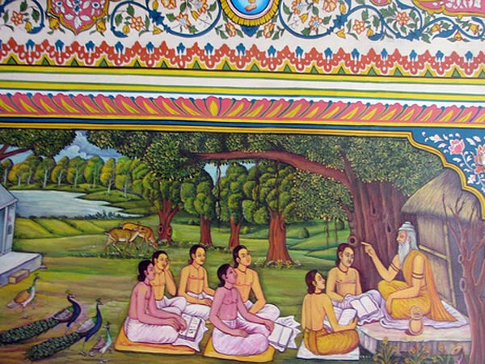
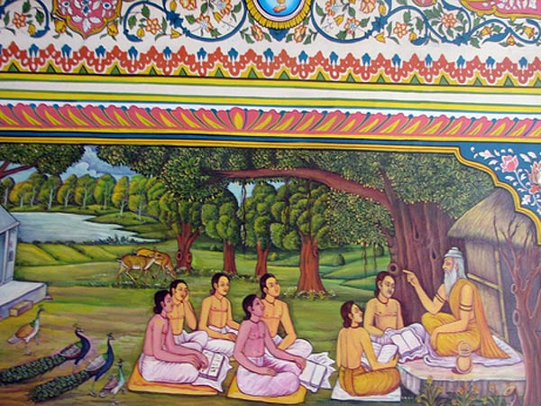
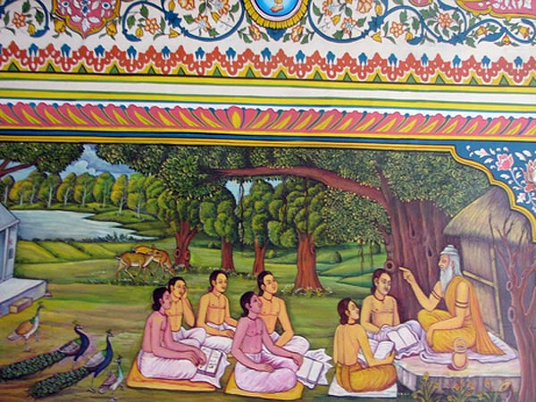
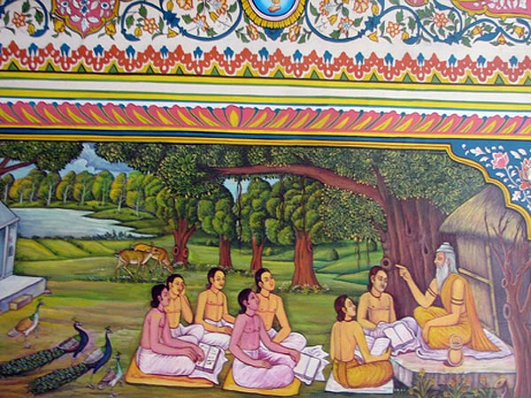

 

It was a residential schooling system whose origin dates back to around 5000 BC in the Indian subcontinent. It was more prevalent during the Vedic age where students were taught various subjects and about how to live a cultured and disciplined life. Gurukul was actually the home of teacher or Acharya and was the centre of learning where pupils resided till their education got complete. All were considered equal at the Gurukul and guru (teacher) as well as shisya (student) resided in the same house or lived near to each other. This relationship between guru and shishya was so sacred that no fee was taken from the students. However, the student had to offer a gurudakshina which was a token of respect paid to the teacher. It was mainly in the form of money or a special task that the student had to perform for the teacher.
The importance of the Gurukul system in present times is to imparting learning to the students in a natural surrounding where the shisyas lived with each other with brotherhood, humanity, love, and discipline. The essential teachings were in subjects like language, science, mathematics through group discussions, self-learning etc. Not only this, but the focus was also given on arts, sports, crafts, singing that developed their intelligence and critical thinking. Activities such as yoga, meditation, mantra chanting etc generated positivity and peace of mind and made them fit. It was also mandatory to do daily chores on own with a motive to impart practical skills in them. All these helped in the personality development and increased there confidence, sense of discipline, intellect and mindfulness which is necessary even today to face the world that lay ahead.
Shree Swaminarayan Gurukuls are currently one of the most widely spread network of Gurukul in India.